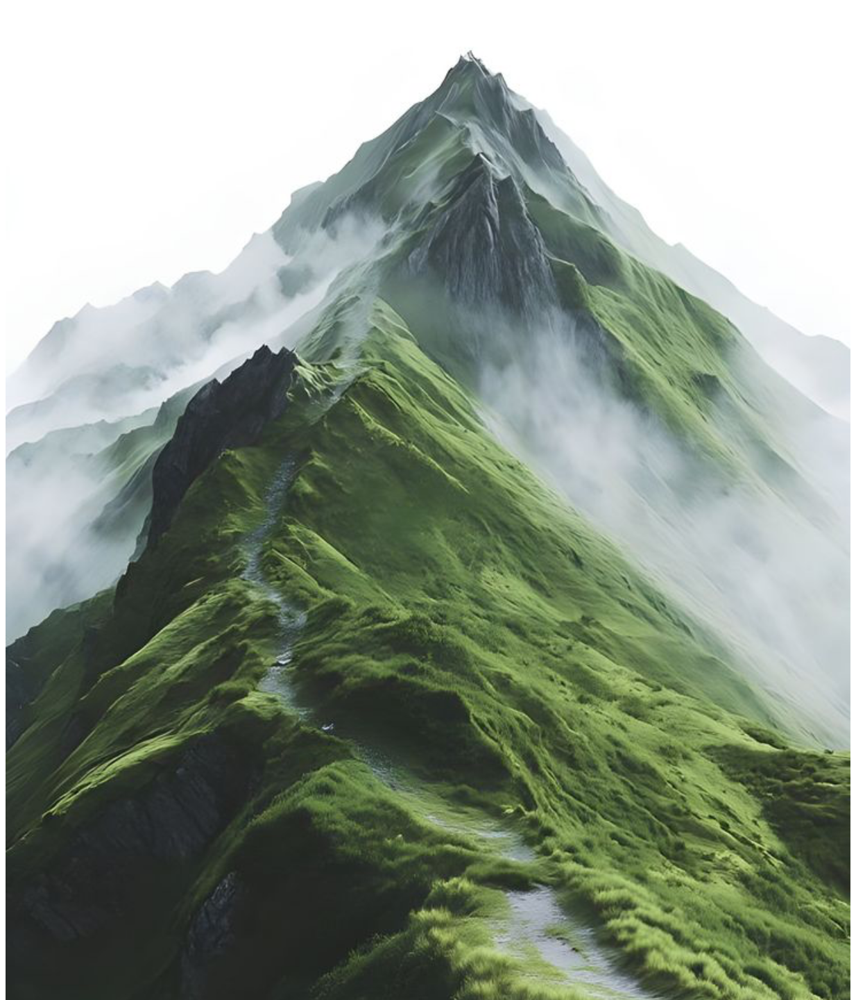

Fase 3 · Bildeprogram
Bildekart
Foto er atmosfære, aldri dekor. Det lever bak en mørk gradient eller i mørke kort på dark, med forest-scrim på lys — og konkurrerer aldri med data. Kald, avmettet natur og atleter i bevegelsesuskarphet; tåkete grønne topper, morgenlys på greener.
| Flate | Foto | Behandling | Motiv |
|---|---|---|---|
| Marketing — hero | Ja | Fullbleed bak forest-gradient 94→32 %, venstrestilt tekst | tåkete åskam, morgenlys |
| Marketing — closing-CTA | Ja | Mørkt bånd, foto bak mørk gradient, lime CTA-pill | green i motlys, lav horisont |
| Auth — bakgrunn | Ja | Helflate bak mørk scrim 55→94 %, kort sentrert oppå | tåkete topp, blågrønn, dyp |
| Auth — onboarding-steg | Ja | Smalt topp-bånd (140 px) bak steg-tittel, resten ren | range ved daggry, dis |
| Forelder — topp | Ja | Rolig topp-bånd, forest-scrim, barnets navn oppå | junior i sving, uskarp bakgrunn |
| FeaturedCard | Ja | Foto under forest-scrim (komponentens innebygde behandling) | motiv etter kontekst |
| PlayerHQ — hjem-hero | Ja | KUN som mørkt kort (class="dark") på lys flate — aldri lys-på-lys | bane i morgenlys, dempet |
| Datatabeller | Aldri | Klarspråk og tall — hårlinjer skiller, ikke bilder | — |
| Cockpit | Aldri | Tett dashbord; helten er største tall, ikke foto | — |
| Workbench | Aldri | Planleggingsverktøy — akse-farge og grid bærer | — |
| Kalendere | Aldri | Rutenett og økt-piller; foto ville støye | — |
| Empty states | Aldri | Ikon + klarspråk + handling — rolig, ikke dekorert | — |
Ekte foto i systemet — riktig behandling

forest-scrim · lys kontekst mørk gradient · dark kort
mørk gradient · dark kort
Der ekte foto mangler — stripete plassholder + mono-motiv
Tre faste regler
Foto lever i mørket
På dark: bak en mørk gradient eller i et mørkt kort. På lys: kun med forest-scrim. Aldri et nakent, lyst foto på en lys flate.
Aldri i konkurranse med data
Tall, tabeller, grafer og kalendere er helten. Foto hører hjemme på fortellende flater — marketing, auth, forelder, hjem-hero — aldri i cockpit eller workbench.
Atmosfære, ikke dekor
Kald, avmettet natur og atleter i bevegelsesuskarphet. Der foto mangler: stripete plassholder med mono-motiv — aldri hånddtegnede illustrasjons-SVG-er.